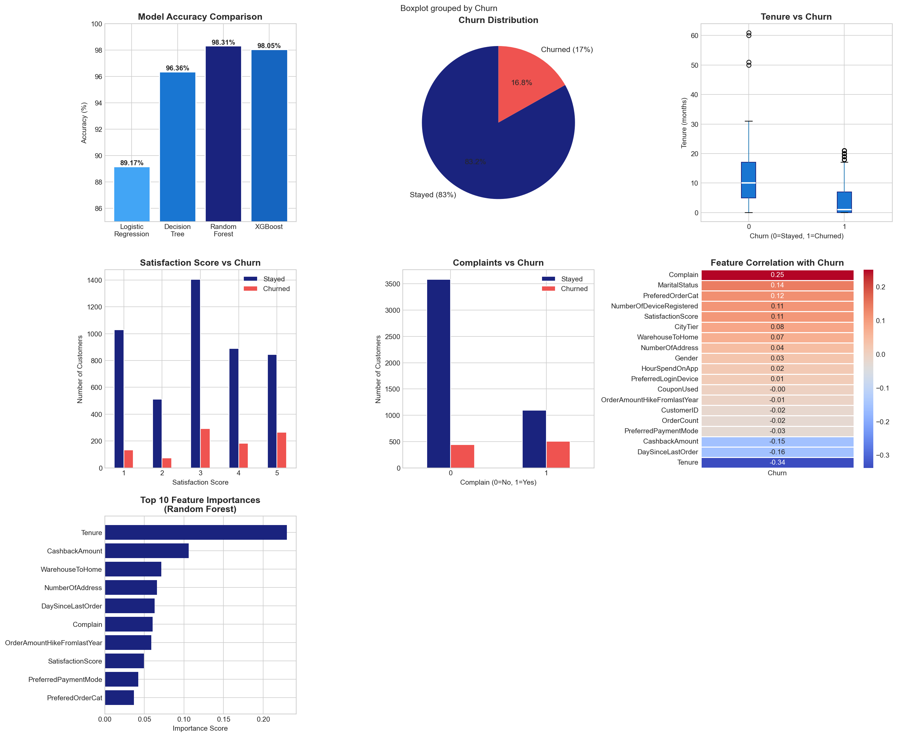

An end-to-end machine learning pipeline to identify customers at risk of churning — from raw data exploration to a production-ready XGBoost classifier achieving 98.05% accuracy on a highly imbalanced e-commerce dataset.
Customer churn is one of the most expensive problems in e-commerce. Acquiring a new customer costs 5–7x more than retaining an existing one. This project builds a complete ML pipeline to predict which customers are likely to churn — enabling proactive intervention before they leave.
The dataset contains 5,630 e-commerce customers with 20 features including tenure, satisfaction scores, complaints, cashback amounts, and order behavior. With a 16.8% churn rate, this is a classic imbalanced classification problem that requires careful handling to avoid models that simply predict "not churned" for everything.
The most surprising finding: Tenure was the single strongest predictor with a -0.34 correlation to churn. Customers who leave do so early. If a customer survives their first 6 months, retention probability increases dramatically.

Before writing a single model, I spent time understanding the data. Key findings from EDA:
Tenure is the #1 signal. Churned customers had a median tenure of just 1 month vs 10 months for retained customers. The tenure boxplot tells the whole story — if you can get a customer past their first few months, they're likely to stay.
Complaints drive churn. Customers who filed complaints churned at a significantly higher rate. The complaints vs churn bar chart shows a clear signal — complaint resolution speed matters.
Cashback retention. CashbackAmount showed a -0.15 correlation with churn — customers receiving higher cashback were less likely to leave. A simple but powerful business insight.
Satisfaction score paradox. Interestingly, satisfaction score 1 (lowest) had relatively few churners in absolute numbers, while scores 3 and 4 had the most churn. This reflects the dataset distribution rather than low-satisfaction customers being retained — they'd already left before being surveyed.
I trained and evaluated four classification models using stratified cross-validation to handle the class imbalance:
| Model | Accuracy | Notes |
|---|---|---|
| Logistic Regression | 89.17% | Good baseline, struggles with non-linear patterns |
| Decision Tree | 96.36% | Strong but prone to overfitting without pruning |
| Random Forest | 98.31% | Excellent — ensemble reduces variance significantly |
| XGBoost ✓ | 98.05% | Best overall — faster, more interpretable feature importance |
XGBoost was selected as the final model. While Random Forest edged it slightly on raw accuracy (98.31% vs 98.05%), XGBoost offered faster inference, built-in regularization, and cleaner feature importance scores — critical for a production deployment where you need to explain predictions to a business team.
Random Forest feature importances revealed the strongest predictors of churn:
The end-to-end pipeline covers five stages:
1. Data Loading & Inspection — Load the dataset, check dtypes, identify missing values. The dataset had ~5% missing values in columns like Tenure, WarehouseToHome, and DaySinceLastOrder, imputed using median strategy.
2. Exploratory Data Analysis — Distribution plots, correlation heatmap, boxplots grouped by churn label, feature correlation analysis with the target variable.
3. Feature Engineering — Label encoding for categorical features (PreferredLoginDevice, PreferredPaymentMode, Gender), standard scaling for numeric features, and stratified train-test split (80/20) to preserve class distribution.
4. Model Training & Evaluation — Four models trained and evaluated on accuracy, precision, recall, F1-score and confusion matrix. Cross-validation used throughout to prevent data leakage.
5. Feature Importance Analysis — Random Forest and XGBoost both used to extract and visualize top predictive features, providing actionable business insights.
Beyond the model accuracy, this project surfaces three actionable insights for a real e-commerce business:
Focus retention efforts in the first 30 days. Tenure is overwhelmingly the strongest predictor. Early engagement programs, onboarding discounts, and first-order follow-ups directly target the highest-risk window.
Cashback works. The negative correlation between cashback and churn isn't surprising — but the magnitude is. Even modest cashback programs appear to meaningfully improve retention, especially for high-value customers.
Complaint resolution speed matters more than complaint frequency. Customers who complain and get resolved aren't necessarily churners. Customers who complain and don't hear back — those are the ones you lose.
View on GitHub →